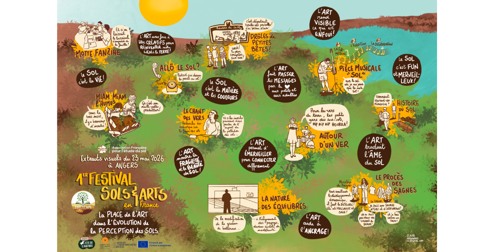
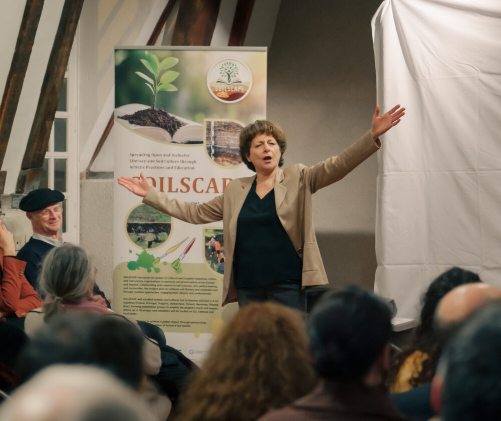
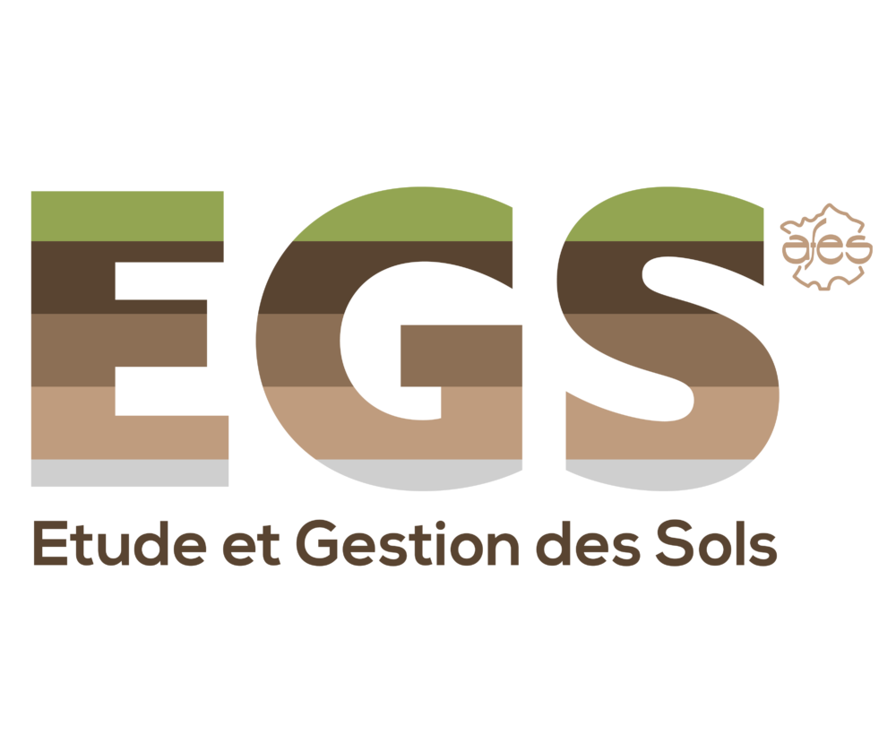

L'AFES est la branche française de l'Union Internationale de Science du Sol (IUSS, International Union of Soil Science)
CONNEXION
L'AFES est la branche française de l'Union Internationale de Science du Sol (IUSS, International Union of Soil Science)
CONNEXION
AFES
Association Française pour l'Étude du Sol
L'association qui rassemble toutes les personnes intéressées par l'étude des sols : chercheur·ses, enseignant·es, étudiant·es, agriculteur·rices et acteur·rices de la société civile.
Centre de ressources · webinaires, présentations et documents pour mieux connaître les sols et les enjeux de leur préservation
Nos projets


Journée Mondiale des Sols 2026
Organisez ou rejoignez un événement partout en France.

Festival européen Sols & Arts
Quand les artistes s'emparent des sols.

SOILSCAPE
Le projet européen auquel participe l'AFES.

La Fresque du Sol
50 cartes et 3 h pour comprendre les sols.

Bourses Demolon
Soutenir les jeunes chercheur·ses.

Étude et Gestion des Sols
La revue francophone des sciences du sol.
Nos missions


- 5 déc. 2026Journée Mondiale des SolsÉvénement
- [date]Formation : description de sol sur le terrainFormation
- [date]Formation : animateur·rice pro de la Fresque du SolFormation
- 19-23 maiFête de la Nature 2027 · appel à organisationAppel
LES SOLS

20 000
mégatonnes de carbone peuvent être séquestrées par les sols en 25 ans à l'échelle mondiale
25 à 60%
de la biodiversité terrestre se trouve dans les sols
95 %
de l'alimentation provient du sol


Adhérer ou faire un don
Parce que l'AFES est une association, et ne peut agir que grâce au soutien de ses membres. Si vous appréciez ce que nous faisons, n'hésitez pas à faire un don ou à rejoindre le réseau de nos adhérent·es.